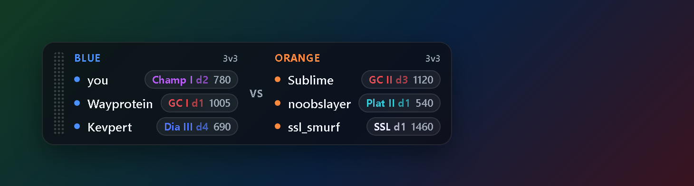

A transparent overlay for Rocket League on PC. It reads the game's official Stats API on your machine, looks up each player in the match, and shows their rank emblem, division and MMR — teammates and opponents. It hides itself when the game closes.

On your phone? The overlay runs on a Windows PC next to Rocket League. Send yourself the link.
Windows SmartScreen will warn you, because this is an unsigned indie build. Click "More info", then "Run anyway" — or right-click the downloaded zip, open Properties and tick Unblock before extracting; then the warning never appears at all.
The whole program is a few short files you can read before you run it: rl-rank-overlay on GitHub.
Rocket League broadcasts match JSON on a local port — the official Stats API, with EAC on. The overlay reads that stream on your PC. Nothing touches the game's process or memory.
The lobby's player ids go to a shared rank service in a single lookup, and ranks come back. That request is the only thing the overlay ever sends anywhere.
Appears when you're in a lobby, hides when the game closes, never steals focus from the match. Drag it where you want it, or turn on click-through and forget it's a window.